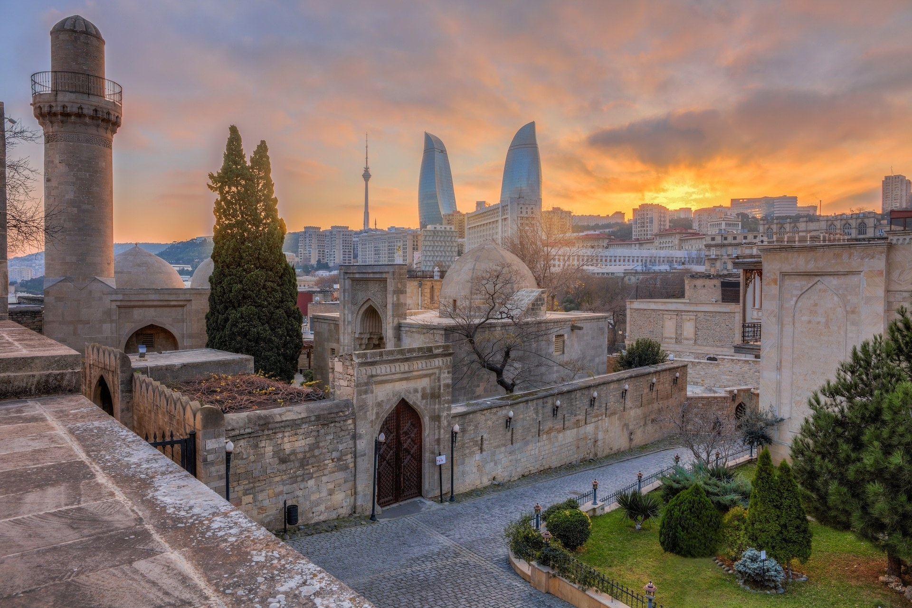
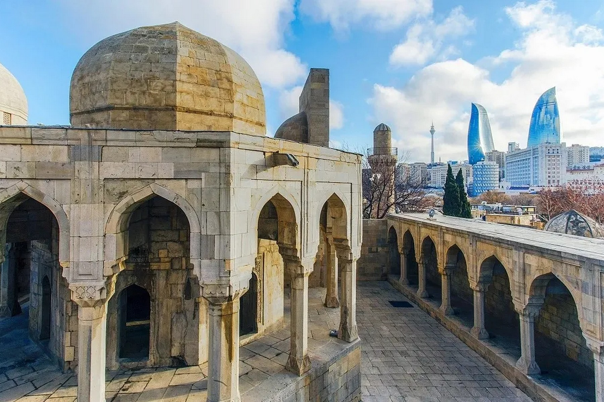
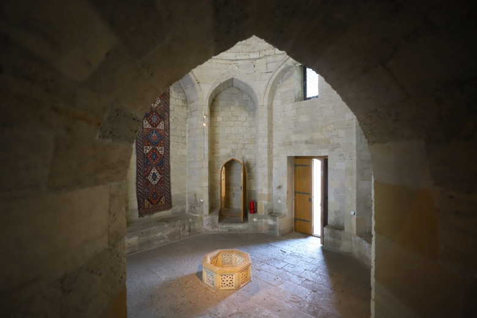
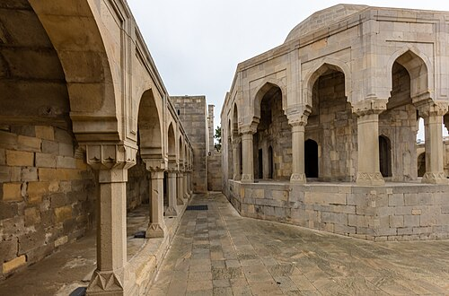

15. yüzyılda, Azerbaycan topraklarında hüküm süren Şirvanşahlar Devleti, tarih sahnesine yalnızca siyasi gücüyle değil, aynı zamanda inşa ettirdiği görkemli yapılarla da iz bırakmıştır. Bu izlerin en etkileyicilerinden biri, Bakü'nün kalbindeki İçeri Şehir'de yükselen Şirvanşahlar Sarayıdır. Şehrin surlarla çevrili eski kısmında, Çin Camii'nin yakınında yer alan bu saray, dönemin mimari anlayışını ve sanat zevkini yansıtan önemli bir eserdir. Hem konumu hem de yapısal özellikleriyle dikkat çeken saray, sadece bir hükümdar konutu değil, aynı zamanda bir dönemin yaşam biçimini yansıtan değerli bir mirastır.
Tarihin İzinde: Şirvanşahlar Sarayı
Şirvanşahlar Sarayı, yalnızca taşlardan örülmüş bir yapı değil; geçmişten bugüne uzanan bir kültür köprüsüdür. Azerbaycan'ın altın çağının simgesi olan bu saray, zarif taş işlemeleri, tarihi dolu duvarları ve mimarisiyle görenleri büyüler.
Şirvanşahlar Sarayı Neden Önemlidir?
Saray, yalnızca bir hükümdar evi değil; bilim, sanat ve medeniyetin de merkeziydi. İçinde cami, türbe, hamam gibi birçok işlevsel yapı yer alır. Bu yönüyle, sadece mimari değil kültürel bir mirasın da taşıyıcısıdır.
Her taşı geçmişten bir hikaye anlatır. Bugün müze olarak hizmet veren bu kompleks, ziyaretçilerine adeta zamanda yolculuk sunar.


